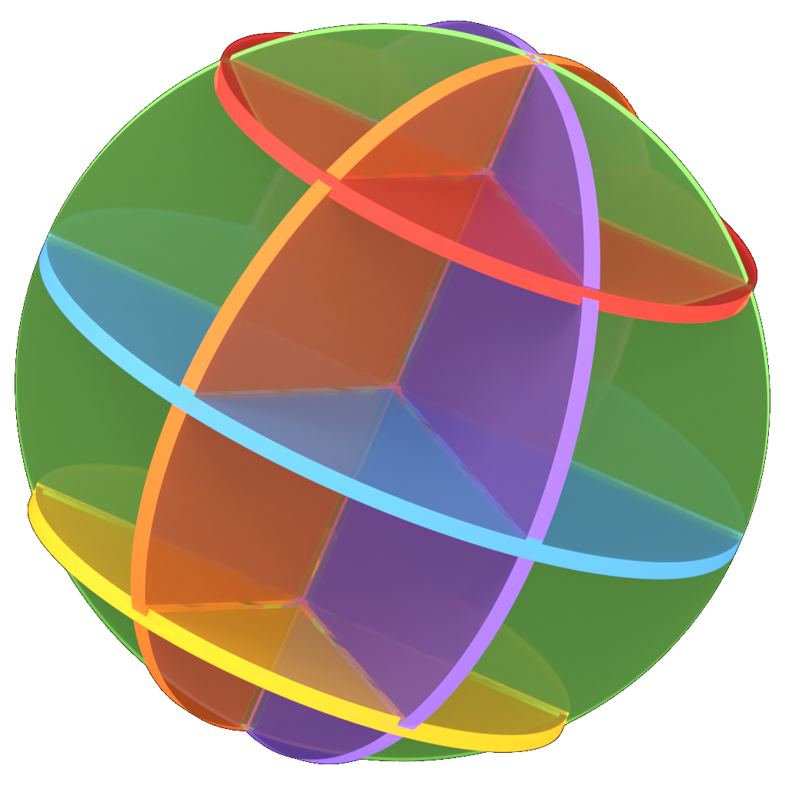

Idea c · Mother EARF, public art · elevation 1:50 at dusk
The globe at the size of a room.
Six slotted discs of cast acrylic, each in its own tint, 4 m across, edge-lit so the rims draw the globe in light after dark and pool their colours on the stone. A proposal; the site and its structure are to be found and engineered.
The globe is the mark's own night render, at scale; people and trees drawn · a proposal, not a site